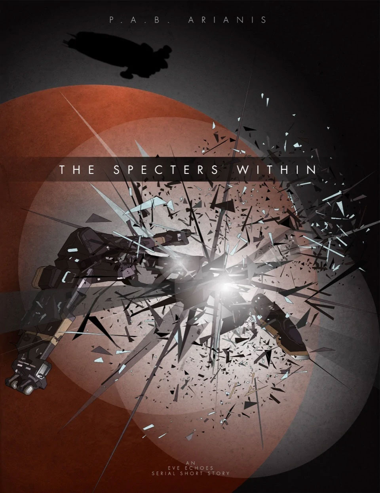

The Spectres Within
BOOK 2 - A fresh new capsuleer moves out into the furthest reaches of inhabited space. Together with friends she'd only just met, can they tame the greatest dangers that New Eden has to offer or will they fall to the fears deep within before they even have a chance?
Author: P.A.B.Arianis
Original post: https://eve-arianis.webnode.page/l/the-spectres-within/
Author’s Note: This is an EVE Echoes story written in serial short format. It is recommended that you pause between chapters... or don't, this is New Eden. Capsuleers make the rules anyway. This original work is based in the fictional world of New Eden as created by CCP and NetEase. All rights to concepts and property related to EVE Echoes or gameplay remain with their original owners.

1.
It wasn't a place for newbies.
Ahmarie's eyes took in a scene her heart and mind weren't at all ready for.
"This... is home?"
"For a while it is. Better stick close kid, you're far too young and kind to be walkin' alone in this place." He grinned in playful jest but for once she was too struck by... well, everything, to offer him the normal retort for his teasing. He shifted his bag to the other shoulder and started off deeper into the alien station. She quickly followed. Around them, seasoned criminals mixed with sociopathic outcasts. Everything stank, and everything in the common areas looked as though it hadn't been washed in years.
"Why here, do you know?"
"I figured that you knew better than I." He shrugged "Thought you were all chummy with the leaders of this little upstart venture. All I know is one day Ponds is out here joking about it being a target rich heaven and the next I'm leading our frigate wings twenty plus jumps into the ass end of nowhere."
"I am not all chummy..." She stole her view away from the unwashed filth and civil decay around them to glare at him. "I heard the Baron call for volunteers to be in the first wave same as you."
"Baron of what, do you recon?" He was messing with her, she could tell by his smug grin and the overconfident gate of his step.
I don't know.. he's just The Baron... I only fell in with this little team a few days before you." They had snaked through a few corridors by now but she was starting to wonder as to where Harvin was leading them. "Besides, I thought you were brushed up on all that royalty bullshit-" He stopped suddenly, causing her to cut off the next thing she was about to say. As he turned, his face darkened.
"Don't... please."
"Don't what?" Her confusion was apparent and he softened.
"Never mind, just... lets not talk about Empire shit."
She put a hand on his massive forearm. It was an awkward gesture with someone she'd only met a few weeks prior, but they'd been fast friends and, well, it seemed to pull him back from wherever he'd gone. "I'm sorry."
He shook himself and started moving again.
"I was about to ask; where are we going anyway? I thought the residential offices were just back there."
"They were, but something I learned a long time ago... always stake out your drinking spot... never a better time than now to start making yourself a 'regular', get the best service that way."
She couldn't argue with logic she didn't understand and so, moments later, found herself pulled up to just about the dingiest bar she'd ever seen, drink in hand.
About four very strong beverages in, their conversation turned to business again. "So, how soon do we get started?"
He grinned into his drink and took the time to set it down before responding. "Anxious are we podling? Ow!" Her jab had been well placed in his side and now he rubbed it in mock injury. He couldn't see the wicked smile she hid behind her own cup. "Fine; be that way. Is tomorrow soon enough for you?"
"Really? We don't need to worry about setting anything up here first?"
"Like what?"
"I don't know, permits... or securing offices, or anything?"
He shrugged "I'll let the officers worry about that, I'm just here to hunt Angels. As for permits... do you see any actual Serpentis personnel around?"
Something that had been nagging at her mind since arrival finally clicked. "Now that you mentioned it..."
"They pretty much built this heap of bolts then pulled back to their own territory, content to let any and all capsuleers who are crazy enough to come out here have free run of the place. As long as they are out killing Angels instead of Serpentis, they don't give a damn. Our pod is permit enough." He nodded and ordered yet another glass.
Ahmarie was feeling the drink pretty good at this point, and judging by the jab earlier, was quite a bit less inhibited than normal. She'd never really meant to flirt with him, and Harvid had never given any indication that he saw her and anything more than some newbie pilot, but here she was, smiling coyly and hoping that he'd indulge her just a little bit longer. "So, you've been clearing out pirate nests a lot?
"You kidding? I live for this! It's what being a capsuleer is truly about! The rush of warping headlong into a whole mess of pirates as they sit there feeling safe in their numbers? Then they see it's just you and their surprise melts into glee as they think they have the upper hand. Wave after wave of em, battlecruisers even, flyin' at just little 'ole you?" Her own random encounters with pirates were nothing really more than four or six at a time. At max a few cruisers... what he was gleefully describing seemed almost suicide. "Then there's that feeling you get, as they just barely get you in range and suddenly you are speeding around them so fast their cannons can't even track your exhaust. Missiles? Pah! Can't even scratch ya."
But then maybe it wasn't suicide... He was a capsuleer. He could just come back to life and be right back out there blasting away. Hell, even one or two of the bounties on the class of pirate nests he'd just described likely paid for a new ship. He kept talking but her realization threw him into a whole new light for her. She was a capsuleer too... but not like that. She hated losing ships, dreaded it. But his cavalier way of just tossing risk aside like that? Wow. Was that what it could really be like? He paused in his exuberance to smile at her, content that she was still interested, he kept going.
She was suddenly very aware of her posture; leaning into him, shyly smiling, absently swirling her drink. She liked him. Fuck. She tried to hide the realization with a long swig of the rotgut but he never seemed to notice and kept right on being excited by the thrill of the hunt.
"Tomorrow we get to do something really fun."
"Yeah? What's that?" She tried to shift her stance to be less obvious but the giddiness in his smile was infectious, only adding fuel to her recent awareness of him.
"We're going to take the fleet up against Angel Elites. Thier best, most fortified fleets." He rolled his drink in his hands as though considering what he was saying. "Ever taken on a Machariel class battleship with a Slasher II frigate?"
Here eyes widened. "No..."
"Neither have I"
She felt like some sort of damn lovestruck puppy no matter how she tried to shake it; clearly the drinking. But damn, the way he made it sound so exciting was just intoxicating. She found herself already planning for the next day, using her implants to purchase several back-up ships for the fleet. There was no way in hell she wasn't going to meet him or anyone else pod for pod out there. He took the last swig of his drink then rolled the cup in his massive hands. She found her mind straying a bit but realized that he wasn't ordering another one. Time was up.
He turned once more to her with a shit-eating grin and stamped the empty glass down. "As I said, should be fun."
She noted that he'd paid her tab as well as she watched him stroll out of the bar just a few steps ahead of her. Ahmarie's mobility was, perhaps, a bit more affected, but she eventually managed to find her way to the residency office, secure lodging, and drag herself off to it. Despite her exhaustion, it took some time before visions of what she imagined the next day would bring finally slipped fluidly into dreams of the same.
2.
"JUMP!"
And that's exactly what her heart did too. Ahmarie's implants were already interfacing with the warp gate in anticipation of the order and she activated it just a few milliseconds after Harvin gave the order.
For an eternity nothing happened. Outside her Slasher II, she watched as spacetime began to warp and ripple in a cone around the skeletal-looking warp gate. The pounding of her heart screamed against the disquieting silence of space. Something so powerful and leading to such a colossal gathering of the Angel Cartels most elite fleets shouldn't have been so quiet and alone in space. It felt like a trap; but a trap for whom? The hunter or the hunted?
Harvin's Condor II slipped into warp leaving only a wake of light. Another member of the fleet shot off and then then so did she. Hurling through a tunnel of spacetime, she watched as two other fleet members' timing had matched her own. By instinct, they brought their frigates into formation mere seconds before dropping out into the first deadspace pocket.
A ripple of blinding sensor-net flashes heralded their intrusion and already the few Angel sentries were navigating to bring their cannons to bear.
"Ignore these, activate the next gate, GO!"
Mere sentries were not their target today.As planned, they'd be too slow to stop a force as agile as hers anyway. Better to leave them as a deterrent to other capsuleers that might try to poach on her team's prize. Again she interfaced with the gate and activated it. Again, the stillness and the gathering waves of spacetime distortion... Again, the silence.
"Don't engage! Move to the next room."
"I'm targeted!"
"Just activate through and you'll be fine."
The flurry of battle coms was new for her. Any experience she'd had up to now had been done solo. The chatter was both reassuring and yet jarring. She barely knew more than a few members of the team and yet here they were, some sixteen of them, flying right on her wing. She located the targeted fleet-mate, Jaja, and brought his status up on her interface. Sure enough, the enemy had locked him and his shields were taking hit after hit. For just a moment she contemplated trying to help him but even as the thought leapt into her mind, her ship leapt into warp. His status was lost from her sensors and she strained to hear any update over coms. None came.
And then she was back in real-space again. This time, the flashes of her incoming fleet-mates were more sporadic and jumbled among a cylindrical column of mineral sensor hits. Damn it. She'd need to modify her sensor-net overview to filter out those rocks but that was for later, she knew she didn't have much time. Harvid was already calling for them to again take the warp gate into the final pocket but this time she was struggling to find it's signature amongst the sea of mineral blips. Meanwhile, the angry red flare of enemy targeting reminded her that time was precious... as if her still pounding heart didn't already know. She watches several of her fleet-mates, Harvin included, leap into warp to the final deadspace pocket. With relief, she noted Jaja land and immediately begin aligning to the next warp. But that relief for her mate was short lived as three Angel pirates confirmed lock on her and began firing. She needed time. Ahmarie selected the nearest asteroid and fell into her training. She knew her protection and very survival hinged on speed and defeating the enemies' tracking... so she put herself into tight orbit around one space rock and then around another, anything to keep her moving while her mind scrambled and finally located the warp gate's signature. She mentally slammed the command to activate it.
Even as her ship found it's alignment she heard first one, and then a second of her fleet-mates call out their impending doom. Two small but visceral fireballs flanked either side of her as, finally, her Slasher II slipped into warp, shedding the target locks she'd carried.
This warp tunnel seemed somehow just a little longer. It was enough time for her to take stock and try to reground herself in her training. She knew what awaited her on the are side, academically speaking anyway. The enormity of what they were doing excited and scared her. It cut through the trepidation she'd worried about the day before, filling her with adrenaline. They were bringing sixteen... well, fourteen now... of what amounted to tiny wasps into the fortified turf of giants. The two members of the fleet who had fallen were already enroute with their pods back to base to simply jump into new ships. She also listened as yet three more of their new fledgling corporation joined into the battle coms, soon to add their frigates to the swarm.
Mathematically, it made total sense, in fact, Ahmarie was even lucky enough to be in coms with the corp leaders as they planned out this little experiment. Her own study of tactics and ancient battles was enough for her to grasp the theory of what they were doing. They just had to be fast. So fast, in fact, that the Angel cannons couldn't track quickly enough to land a hit. With enough numbers, their own damage output would be sufficient to eventually cripple the Angels in sustained engagement. And in the cold calculating way of such things, the leaders had also concluded that even if every pilot lost two frigates, they would still come out WAY on top financially. The trick would be to just make sure that they could keep enough frigates active on field at any given time. Any way she did the math, she couldn't find fault in the theory either.
And so, as the warp tunnel bled the last of its distortions, dropping her fleet suddenly into a seething nebulae of enemies, she took the mental equivalent of a deep breath and listened in for the orders she knew would be coming. Harvin didn't disappoint.
"Make sure your orbits are set to within five kilometers and always be anchoring on the fleet target. Afterburners on!" Integrated fleet commands registered a primary target and Ahmarie quickly complied; initiating weapons lock and orbit with consecutive thoughts. A secondary target appeared and she began locking it as well. Within moments, all fourteen of her fleet were swarming about the hapless enemy Thrasher at over 1500m/s each. The destroyer melted almost as soon as her lock was established. The suddenness of it might have otherwise startled her, but she was already busy moving her orbit to the second target and locking up a third. Harvin kept the targets coming in a smooth, wordless river of death as target after target was converted to slag. Then, five more allies landed on grid in rapid succession, initiated their own locking, and joined the frenzy.
"Gate Scout to FC, Eyes on entry gate."
"Eyes confirmed, thank you and welcome. Sorry you're missing out on the fun in here." Harvin's tone was bemused and playful, showing none of the stress of command that Ahmarie imagined she'd have been feeling.
"No worries mate, Jaja's broadcasting a great show and I've got your back."
Harvin's chuckle rumbled over the coms. "Roger that."
Almost on queue, the last of the standing sentries perished and a fresh wave of Angels landed from warp, rallying to their felled compatriots. Again Harvin was right on top of it. "Get in orbit quick, if you get locked don't wait to tell me, just warp off and come back in. Pay attention folks, this wave's got a Mach!"
Sure enough, blazing in full battleship rage the defiant sensor return of a Machariel shone out from within the pile of enemy signatures. The damn thing was large enough to swallow their entire fleet and still have space for more. Once more she felt the adrenaline pumping through her. It was a drug, seeping into every sensor, every actuator of her Slasher II. It fueled her and she was her ship. Ahmarie forgot about losing ships and playing it safe. Emboldened by the swarm she raced out ahead of her fleet, the very tip of a javelin of frigates hurled through space.
A new primary target pinged onto her interface just as Harvin's voice came over coms. "Mach first." If there was an almost feral glee to his tone, Ahmarie could never hold it against him in all her lives.
Like a cloud of Locust, all nineteen frigates descended upon the beast. Cannons blasted at them from every angle, the Angels desperate to free their champion. But their tracking just wasn't fast enough and within minutes the first of many Machariels was not but venting gas and twisted bulkheads. Small explosions began to ripple its innards and by the time the final fatal fireball took it, Harvin, Ahmarie, Jaja, and the rest of the fleet were already halfway through the shields of their next victim.
By the third wave, even the appearance of more Machs was starting to feel somewhat routine and Ahmarie's adrenaline was beginning to wane. Ultimately, the Cynabals were proving to be more cunning an adversary than the Machs had been and the team lost two more frigates to their revenge. Even so, what had looked mathematically possible in theory was turning out to be almost easy in practice. Sure, some of the newer pilots were making mistakes. Some were unlucky enough that the Angels saw the poor choice in vector alignment or the slow uptake on a new target and pounced. But invariably, that pilot just simply warped off with only a close call singed into their hull.
"Gate scout; FC, hostiles on grid. One, no two enemy caracals landing on the entry gate."
Shit.
In the increasing rhythm of the fight, Ahmarie had forgotten to keep scanning the local coms channel. As soon as she looked, sure enough, two neutral pilots were logged in it amid all her fleet-mates. She, like everyone else, found herself waiting for orders from the Fleet Commander... orders that were not coming.
"Harvin? Coms check?" Jaja was the first to ask.
They finished the last Cynabal in the wave and the fleet moved to engage the next target they had, one of the Machs. On coms, no response came.
Ahmarie was about to ask again when Harvin finally spoke up in a hollow voice, "We are out of position." She watched him start to realign. However, by his new trajectory, he looked like he was about to warp off grid! Her mind raced. If those Caracals came into the pocket, all her training told her they had just one chance at them. Missile-boats by design, two hunting Caracals were more than well enough armed to take out any frigate's armor or shields in moments. If those ships landed back at the deadspace warp-in point while the whole fleet was over 50km away swarming the Mach, her fleet would have to fly right at the enemy and thus give the enemy clear up-the-throat missile shots that almost couldn't miss, no matter HOW fast her fleet was moving.
They could run, warp the fleet off grid and regroup. Or they could fight. After seeing what she and her mates could really do, she knew what her call would be... but why wasn't-
In that moment, Harvin's took a full volley from the Mach that he'd just shown his ass to. With a brilliant flash the Fleet Commander's ship erupted into a fireball.
3.
Nothing but a pod remained where Harvin's ship had been, and still he didn't answer.
Ahmarie made her decision. "Fleet, this is Ahmarie. Harv must have de-sycned, I'm taking over the fleet." Harvin had been rather liberal with assigning team deputies in an effort to distribute the work of target management and as an acting deputy, she was within regulations to do what she had just done, not that there really were any regulations anyway. And, with the Corp being so new and pecking orders not yet established, who was to say who the next in command should have been. But just taking the lead with Harvin's unresponsive pod still on grid just felt, well... wrong.
But she knew what needed to happen. She knew it in her soul.
"Fleet, target this Bellicose and get yourself in orbit fast!" She knew she'd likely lose a few more as they shifted orbit form the Mach, but the new target had one specific advantage: It was tracking to fly right past the deadspace pocket warp-in point.
"Gate scout; FC, One Caracal is warping in."
Ahmarie started a mental clock. "The other one?"
"Staying here."
At least they'd make it easier for her. "Fleet, I want all webs on the new target but do not fire!" In her mind, the clock ticked; First pocket gate about... now.
The Bellicose succumbed to the barrage of webs that grappled it to a single point in space. She checked and confirmed that they'd stopped it just about on top of the warp-in point. She wasn't quite sure in which of her studies she'd seen or heard of this maneuver, but it seemed to be working. Second pocket might take a little bit longer... so... maybe about now? In the back of her mind, she registered Harvin's pod finally warping off grid but had no time to consider where it warped to. "Everyone get ready to target the Caracal when it-"
The hostile was a bit earlier than she expected. It flashed onto grid with all the temerity of a grinning cat. Ahmarie sent the command for the fleet to lock it faster than she'd done anything she could ever remember.
"All guns! All EWar! Anchor on it now!"
Eighteen ravenous frigates shifted targets. One second the Bellicose was anticipating death and the very next it watched a Caracal appear beside it then burden the execution instead.
"Kill the Pod!"
It wasn't over yet and Ahmarie knew the next moments were critical. Their corporation was very new to this space and how they dealt with neighboring capsuleers that might wander through their territory was going to set precedent for everything else they hoped to accomplish. She may have been new to the breed, but one thing she'd learned the hard way; even in high-security space, capsuleers played by very different rules. They rarely responded to overtures of peace or mutual trade. No, if you wanted to scare off any that might try to take on pirate bases you wanted to claim bounty for, then you had to show strength. You had to be vicious too. Otherwise, next time those same capsuleers would realize that the quickest route to their next payday was through you, literally.
It took an eternity to lock down and destroy the pod, and eternity in which Ahmarie was already scrambling to plot her next move. The other Caracal was still at the first gate. Presumably he'd already realized what grim fate had befallen his buddy, so he was either trying to decide whether to come to attempt revenge... or call for backup. The first option suited Ahmarie just fine so long as he did it quickly while they were all still piled up around the warp gate, but soon she'd either have to reposition her fleet to resume taking out the Angels or abandon the pocket altogether and come back. But if he sat there and called for backup... The Corp leadership hadn't fully scouted out the diplomatic landscape of the region yet and there was no telling what backup these two hunters might have. That really only left Ahmarie one option. She had to become the hunter.
She'd dreamed of leading pilots into combat, like a child dreams of someday being a dragon. Being a Fleet Commander meant that everyone was relying on you. When they lost ships, those losses were because of you. Sure, there were certainly the perks of fame and prestige; Fleet Commander's names lived on in infamy within the capsuleer's world. She never actually wanted any of it though, never planned for it. But she'd certainly studied for it. And, she knew the leadership's minds. Killing one Caracal that wandered into your deadspace pocket was a solid win, but it didn't show the enemy aggression or ability. It was too easy to mark something like that up as chance. She needed them to fear.
"All pilots, take warp." She led them away from the cooling remains of the pod, granting momentary reprieve to the Angels who might wonder what deity deigned their survival. She took the fleet hurling toward the system's blazing red sun. "FC; Gate Scout, I need moment by moment on what that Caracal is doing."
"Roger, he's just staying here... waiting for more maybe?"
Maybe... but she was nearly committed now and would have to make the final call without knowing for sure. As one the fleet popped out of warp, mere motes of darkness against the massive star. Taking tactical command, she realigned the fleet and punched them back into warp. As before, she watched as they all came into formation in warp. If one ship was powerful for a capsuleer, the amassed consciousness and might of so many ships felt like the reaping scythe of death. She prayed that the other Caracal would be stupid enough to wait.
"Caracal is aligning"
"Aligning to where" No, they were so close!
"I can't... to the gate, he is aligning to the gate."
All eighteen parts of her scythe of death landed in one massive flash, just in time to watch as the enemy caracal jumped into warp and was gone. For just a moment, she considered trying to go in pursuit. The frigates would easily outrun the cruiser and they could be waiting at every gate the thing deigned to warp to even if they went into warp after it. One thing prevented her. None of her fleet carried warp disruptors. Sure they could catch the enemy, but they would never be able to do so with enough time to lock and destroy it. The first caracal had fallen as much to surprise as to their guns and missiles, but surprise was a weapon she no longer had left to wield.
Damn.
"Alright folks, let's get this done then. Everyone prepare to take the warp gate back into the deadspace. We're going to get ourselves the rest of those Machs."
The feeling of collective dismay was palpable in coms but she reluctantly activated the gate herself and was the first to slip back into warp. "Everyone jump in, now."
Her heart never once settled for the remainder of the mission as they methodically decimated the Angel fleet; ship by ship. Through it all her mind wandered to too many places. While her voice seemed like someone else's, she tried to follow the pattern that Harvin had used; targeting the most dangerous of the enemy ships next each time. She was slower to get secondary targets out though, and one more of their number lost their ship when she failed to move the fleet cleanly between targets. But she was completing the objectives. The fear was still there; that she might get everyone killed or worse. But somehow the past two engagements had given her just enough of a faith to believe that maybe she could do this, maybe she was worth flying under. The next time someone suggested that she try taking a fleet out, she wouldn't be so quick to brush them off.
Everything wasn't all good news though. Where had Harvin gone and why hadn't he returned? She couldn't fit that puzzle together in her mind. A small voice battled with her newfound faith, instilling little doubts that Ahmarie tried to work though. Had she misread the enemy capsuleers? She kept expecting to hear the gate scout announce the arrival of a much larger, more massive fleet, but it didn't happen. She'd intended to show them that her Corp was not to be underestimated, that they would strike swiftly and with skill against anyone who dared challenge them... hopefully it had worked. Maybe the lack of any returning fleet meant it had? Only time would tell.
The last of the Angels fell in a fiery demise and then the work of sifting through the wreckage began. She couldn't be sure, but at best guess, between the various modules and debris that was salvageable, the experiment looked to have returned a net profit of over five billion isk; the ten million isk worth of losses couldn't even stand in comparison. But what of the other losses, she wondered. Her decisions would certainly have reaching repercussions and require no less than a 'stern chat' with leadership. And then there was Harv. Was he ok? What would he think of what she did with his fleet?
"Fleet, you are clear to free-burn back to base." Almost as an afterthought she remembered to add, "Oh, and good work everyone."
A chorus of cheerful 'rogers' and 'you got it' came back over the coms but her mind was already too busy worrying about what awaited her back in the station.
4.
Morning was a relative term, despite what artificial cycles a station might keep. Ahmarie awoke to find her apartments in disarray; garments carelessly strewn about or dropped in a line of detritus starting at the door and ending in her bed. She didn't remember much from the night before, but she was quite sure it hadn't involved any fun explanations for the chaos of her floor. She remembered walking straight from the hangers to her rooms. But everything after that was a blur. Judging by what she saw now, clearly she hadn't missed much.
She rubbed her eyes, then head, then promptly plopped her face right back into the pillow. Technically she didn't really have to do anything today. She could just stay in bed? Not likely for her. Still embedded within the pillow, she called up her messages via implant.
Hmm.
She opened the flagged message from leadership.
::Can you be available for the leadership meeting at 1800? - Ponds::
She checked the time; 1500. Plenty of time. Her circadian rhythms had her on the later of the two typical corporate primetimes. In an effort to be more accommodating, most meetings fell in the operational lull that came after the first and most active set of hours and a little before the later set. On her busiest days, she was more than happy to participate in both operational timeframes. Today, however, she had some things to... deal with, from the day before. She responded to the message in the affirmative and hauled herself out of bed.
Walking through the corridors was different today than the awkward and lonely alienness of the day before. Sure, the station was still a festering slimeball, but every now and again she'd see one of her corp mates getting some food, or a few laughing together over a drink. It wasn't that they had any sort of logo plastered on their jackets; the corp wasn't overtly claiming this territory... yet. It was more a feeling of recognizing them by their coms contact. Even having mates was surprisingly nice.
It had been a long time since she'd felt part of a team. Her smuggling days were a monotony of lonely runs through empty space marked by short moments of intense awareness that any other person she saw or interfaced with might be the end of her career... or her life. Then, after becoming a capsuleer, the loneliness only got worse. Trust was the most important commodity in New Eden and without it... you were forever alone, no matter how many people you surround yourself with.
That trust was always hard earned and very easily lost. It had to be nurtured. She paused for a moment in front of the bar. It was the same bar that she had visited with Harvin just yesterday. It seemed a long time ago now. She wasn't really sure what she was going to say or how she even felt trying to find him, but she knew that at the least she needed to talk to him. He was, after all, the closest thing to a friend she had out here. Questions flew through her mind about what had happened, was he angry, did she do something wrong in taking over the fleet... By the time she passed through the short hallway into the establishment, only one question really mattered. Was he ok?
He wasn't there.
She felt sure that he would have been... He still wasn't answering his coms. But, as Ahmarie looked out over the smattering of people, more than the day before she noted, she saw no indication that he'd even been there. What she did see though, was an above average proportion of her corp mates. Guess she and Harv hadn't been the only ones to favor this dive.
"Hey Hot-drop! Got a drink for ya!" The offer was decidedly made in her direction but it took a moment to realize she'd somehow acquired a new nickname. The pilot making the offer was one of their more kill-hungry, and therefore more cavalier, members. She decided it would be rude not to at least accept the drink.
"Hot-drop huh?" Her tone was, she felt, not too derisive. Besides, she wasn't sure yet if the name was meant in jest, tease, or respect. She took the proffered drink and tried it; stiff as hell and burned like it too. "Any of you seen Harvin?"
Several shrugs.
"He's been taking ship after ship out all night, keeps coming back in pods though."
Ahmarie turned to regard the slim young man who responded. Like Harvin, this one was likely to rise quickly in fame as a Fleet Commander. He was ballsey as fuck, but under the mischievous façade was an incredibly analytical mind and sharp eye for tactics. "Shaddik, right?" He nodded. "What's he doing?"
"The fuck I know, but whatever he's up to, it was clearly more important than getting trashed with us so..." There was a round of chuckles and good natured comradery. "Speaking of, we're going out for some more 'rats. You wanna take lead?"
It took her a moment to realize what he was offering. He, a leading commander, was deferring to her? "Uh.. No.. But thanks. I have a meeting with leadership in a bit."
"Hah! I know one of them, don't let him talk your ear off." And with that, the rest of them put down their glasses, paid their tabs, and made their way out chuckling and guffawing one another like they'd been working together far more than the week or so she knew they had.
She decided it wouldn't hurt to be just a little early to her meeting and headed out as well.
The leadership meeting turned out to feel a lot more like the pub encounter that she'd just come from. The leaders, most of them very new to their responsibilities, were joking and making sport. Yet, somehow she noted that things were getting done and decisions were being made. Then they turned their attention to her.
"So, we have to call you Hot-drop now I hear?" This one looked so much like Shaddik that she almost did a double-take.
"Wha-?" He only grinned like an overgrown child. "I mean, sure..."
"Ahmarie Jhanik then?"
She cringed; hearing her familial name still carried pain. The Shaddik look-alike wasn't the only one to notice and his tone softened. "Ahmarie then; I'm Ponds" he offered a mock salute. She nodded in response.
"So, how can I help?"
They all looked at each other and the smiles returned. "We understand that you've had some study on tactics and warfare."
"Yeah... but I'd call it more of a hobby really."
"What happened yesterday wasn't the work of a hobbyist. We," and here Ponds indicated the lot of them, "would like you to consider joining the leadership team as a co-leader of our military branch, with me."
She almost started to ask him to repeat it. What came out instead was, "What would you want me to, well... do?"
They went on like they hadn't even noticed her moment of trepidation. "Help organize, coordinate, and train our pilots in strategy and tactics." Her semi-glazed look must have implied a need for more information because he smiled and continued. "Don't worry about ship design and fittings, I'll handle that for now, and as for the mining and industry, just a basic overview for that lot should do."
One of the others, an Industrial pilot by his mock offense, gave Ponds a look of betrayal.
"Can... can I think on it?"
"Of Course!" It was said with sincerity, but also with a hint of something she couldn't quite place. She thought it sounded like Ponds knew what her answer would be and was simply letting her 'think it over' s part of some kind of joke.
The rest of the meeting Ahmarie barely noticed what was discussed and when it ended, she found herself wandering out of the room and about the corridors without much thought as to a destination.
In truth, she wasn't worried too much about the strategy or coordinating parts, years of planning ways around blockades had given her a keen sense of those areas. Even the teaching part wasn't too daunting. No, the part that really scared her was the idea that they thought she was not only capable of, but the best person to lead pilots like Shaddik and Harvin. She had never actually commanded a fleet until yesterday! She'd done the math behind what they hadn't said too...
Ponds was to be her co-lead.
Ponds carried the rank of Fleet Admiral in their now quickly growing organization.
5.
Ahmarie's wandering eventually brought her to the realization that what she needed was another one of those really strong drinks. This, in turn, brought her wandering back into the bar. Guess she was giving 'regular' a pass and moving right on to 'permanent fixture'.
The venue was empty save for a single mountain of a person mulling in his cups. Had she not been looking for that very mountain all day, she might have mistaken him for someone else. His demeanor was so cloudy that she barely recognized him. Her first instinct was to bust right up to him and give him a piece of her mind for avoiding her but then she thought better of it and softened right as she grabbed the stool beside him.
"What the hell happened out there, Harv?" She tried to push as much sincerity into her voice as she could but it still ended up coming out harsher than intended.
His response was to withdraw further into himself, his shoulders sagging even more.
She flagged the serving droid for her own glass, took a seat, and then a deep breath. Maybe her desire to help him was borne of an effort to get out of her own head or find a different problem to solve. Perhaps part of her saw this as a sort of test to prove she could even do the job that had just been offered to her. She didn't really know. A tiny voice deep down suggested a different reason which she quashed instantly before it could distract her. Looking at the man beside her, she let herself try to imagine what he was possibly going through. What would cause someone to obsessively throw ship after ship into the enemy's maw? He'd always been so successful, a natural leader. Everyone went to him for strategy and knowledge of the Angel's tactics and abilities, including her. Why would someone like that suddenly...
He thinks he failed everyone!
The thought struck her mid drink and she almost choked on the fiery liquid. She put the glass down slowly and tried not to cough. Something in the way he was trying to shoulder everything himself just made him what... adorable?. It was bull-headed, arrogant, and just plain stupid... but she couldn't help but find herself liking him all the more for trying. She just wanted to reach out and...
No, focus! There was a place for Lone Wolf Warriors, and perhaps, in time, their new organization could afford to have a few of them, but not yet. Not when they were this remote and this new. One thing that was painfully clear from her time spent with leadership was that their strategy was entirely based on numbers and teamwork. In a universe where a Capsuleer could do really whatever they wanted, the true secret to success was... well... success. With the right people and collaboration, repetitively killing off pirates could be fun. But it was also a stepping stone to something more, something bigger. It led to an identity, a place to call home. It led to something worth defending. It led to a place for a Capsuleer to belong. That was the prize at the end.
"Trying to perfect the ultimate fireball maneuver?" She put as much humor in as she dared.
Nothing.
Ok, different approach. "I could really use some help trying to understand the best primary order for those Angel deadspace anomalies. I know we've always done Machs first, but don't you think the Cynabals should be first now with what we learned?"
"Won't matter..." It came out almost as a growl; a very inebriated growl.
"Why not?"
It took several moments for him to respond again. "If the FC can just get alpha'd off the grid for one mistake, then the theory only works in primetime."
It took a moment to sink in. Holy shit, he's right! How had nobody thought of it? He wasn't just wallowing is a ship loss. Well, he was, and his inner demons were sure taking advantage of it, but he was also tackling an honest issue with the leadership's tactical plan. When his Condor II had gotten so rudely converted to expanding plasma, she and at least two other Fleet Command capable pilots had been present to pick up the fleet. Even then, she'd almost felt wrong doing it. It meant they would have to train better, and have back-up FCs pre-set. But all of that had occurred during one of their largest fleets to date. And it had happened during the time of 'day' when they could have the most pilots online.
But New Eden didn't really care about silly things like when a person chose to sleep or stay out. Danger and chaos occurred when it did and sometimes that would mean a potential target would appear when there were only a handful of pilots available; when there might be only one FC available. It was a very pertinent key to their future that would need to get answered. But rather than bring it up and ask for help, he was still trying to do it alone.
"So, why not see if anyone else has any ideas?"
He let out an almost derisive chuckle. "What, like the leadership? Sure, we'll just talk the Angels into not shooting us while we destroy them."
That was the alcohol talking. Still, she persisted, "What if I was able to get them to do more than just talk, what if I got the other FCs together and we worked together on some experiments with different hull types?"
"You?" Again, she reminded herself that it was his demons and the drink and let the disbelief dripping from that single word pass without letting it sink in too far. Until now, she'd always been just another newbie pilot to him. Up until now, she'd always seen herself that way too. She realized that she'd just made up her mind.
"Yeah me, leadership offered me Fleet Admiral today." Even before she finished saying it, she knew it had been a mistake in his current condition. She knew that the answer she was about to get would be one of pain coming from someone who believed in the tradition of rank and duty, someone who'd been rejected by it his whole life.
"Fuck off, kid."
Yep. Knowing it was coming didn't make it any easier though. She wanted to tear him a new asshole, to kick his puddling brains out of the slump and into a ship just so she could blow him up herself. Fucking selfish dick.
But she also knew now what it was that was festering in him. She knew he'd sober up and come back to that massive, self-assured, cute haus he'd always been. Everyone had their inner spectres. Even capsuleers. Especially capsuleers. And those shadows sometimes won. But as a capsuleer, one couldn't escape them the way a mere mortal could. So, each capsuleer found their own way of medicating. Some through drugs, some through sex. Some compressed them into rage and it became the ammunition they spat upon their enemies as they painted their spectres across space.
Harvin had been blowing his own up all night and when that didn't work he decided to drown 'em instead. Ahmarie could forgive him, hell, she had her own demons... but right now, she just wanted to blow something up too. She slammed her own empty glass down on the counter and dismounted the stool.
"Talk to me when you finally sober up, Harv." She was hooked into battle coms before she even left the bar. "Hey Shaddik, ya still out there?"
"You're just in time for the next Inquisitor nest, get out here!"
She forcibly put Harv and his problems out of her mind. "On my way." First Angel to shoot at her tonight was getting fucked the hell up.
6.
A final massive explosion lit up space, bathing all fourteen frigates in the splendor of their achievement. Back-to-back Inquisitor class nests to cap off a long evening of no less than six special-class nests. For the first time in hours, a calm came over the fleet even as three of them hopped into warp in search of more. Ahmarie should have been exhausted but instead she burned with euphoria. Everything was going right. They'd lost only two ships to a Deadspace class nest but that was it. And to show for those losses, they had plundered in excess of ten billion isk in total. Members were coming and going from the fleet as they needed without diminishing the team's efficacy at all. Where once only one or two members felt comfortable flitting about the region scouting out target nests, now there were at least four pilots already speeding through Insmother, Detorid, and Tenerifis only three scant minutes after the last nest had finished. She wasn't the only one riding high.
"How much longer you think we can keep this streak up?" She could hear the excitement in Shaddik's voice.
"I think it depends more on how soon people will want to turn in, I suspect New Eden's piracy has barely been dented by all our work. There'll always be more."
"Yeah, but this good?"
"Fair point." The scouts had moved out of Detorid entirely by this point, searching for newer hunting grounds where only the best class pirates nests might still be waiting. "Should we join the hunt too?"
Shaddik took a moment to respond. She imagined he was pondering whether he should stay with the fleet as they waited or become a scout himself. Ahmarie used the moment of pause to further consider the larger picture. Their strategy, radical at first perhaps, was paying out massively. With so few other major capsuleer corporations in the area yet, they had the run of about 4 regions. That let them cherry-pick the most dangerous and therefore the most lucrative targets, those classified as Scout, Inquisitor, or Deadspace class. And, because they brought upwards of twenty-some pilots, any random capsuleer from another corp that appeared took one look at the number of potential enemies in system and buggered off. Not one of them had even had the bravery to poke their ships into the pirate nests as the Caracals from the other day had.
As a team, their pilots were learning at an incredible rate too. Already Shaddik had been able to let someone else call targets and maneuvers for the last two nests while he sat back and coached through direct messages. She'd messaged the other leaders with her acceptance of the Admiral position during the fleet earlier and now considered the new job that lay ahead of her. With teachers like Shaddik and so many pilots eager to learn, training was going to be so much easier than she thought. Leadership was waiting till the next day cycle to announce, but she was already covertly eyeing up Shaddik as one of the lead FCs. She also had her eyes on Harvin once he got over the slump. Harv... She still wasn't sure what to do there yet.
"Hey, Ahmarie, sounds like the rest of the fleet is going to wait back at base but I saw something a few systems over while scouting earlier. It could be another capsuleer corp setting up base, care to come with me to say 'Hi'?"
There was such a playfulness in his voice and in her current state of exuberance her only possible answer was, "Bet your ass."
It only took two quick jumps for her to see what had piqued Shaddik's interest. She could already count about fifteen other pilots in local coms channels and the welcoming icon of another Serpentis capsuleer station blazed confidently on her UI.
"You up for some hunting Hotdrop?"
"Start with the belts?"
"Afirm"
Before they even shed the residual cloaking effects from the gate, they were already jumping into warp toward the first of several asteroid belts. It was amazing to be of like mind with a wingmate. She didn't even have to explain objective or reasoning; they both knew that simple truth about New Eden. Nothing says welcome to the neighborhood like cannons and missiles.
The first belt was empty, followed by the second cluster. But as they dropped out of warp into the third asteroid belt, three Venture II mining ships sat fat and happy in the middle of the belt, not more than seven kilometers from the warp-in point. Sweet fuck, were they in trouble.
"Watch for a response fleet, nobody's this care-bear in null..." Shaddik's warning rang in her head but they were both already busy changing vectors and initiating weapons locks. It was unlikely they would get all three, especially as neither of them had any sort of warp disruption equipment fitted to their ships. Shaddik called the primary and before they could even get a full orbit in, their shared firepower had slagged the ship. They were only about half-way through the second miner's armor before any alert went up in the local coms channel and halfway through his hull before either of the remaining two Ventures began to realign their ships for warp. It was laughably easy.
Finishing off the second took just long enough that the third slipped off grid to safety. Not wanting to push their luck, the two hunters didn't wait around, but instead leapt into warp to the next belt. To their incredible surprise, there were still miners in this one as well, but how long did they have till a response fleet of combat ships came to chase them off?
"Fuck it, we're in 2mil isk ships, lets get em!"
Shaddik only laughed in response, then marked one as primary.
The pair of them made it through two more belts with half as many kills before the first combat ship landed on grid. Knowing they couldn't take on a full Caracal with just the two of them, they were in warp to the next belt before the Caracal even began coming around to get them in range. With the arrival of the very tardy response fleet, all the targets dried up as well; every miner scurrying into the station for safety.
"Time to go I think." Shaddik's words mirrored her own thoughts. "Align to the gate. Go."
At the end of the warp tunnel, they found a lone Talwar class Destroyer waiting for them. There was no way it could prevent them from using the gate, but it gave her an idea. "Think it will jump through as well if we do?"
Shaddik was practically gleeful. "Let's do it. Jump and hold cloak!"
A whoosh of spacetime deposited them into the next system over and they waited...
Whether it was ambition, guile, or stupidity, two frigates waited for their would-be hunter. They were outclassed by the destroyer for sure, but neither cared. They were on fire and only the equal fire of their hulls exploding could stop them.
The Talwar took the bait, popping out of concealment about fifteen kilometers from the gate. Its lethargic crawl back towards the gate spoke of a hunter who thought it's quarry gone or perhaps didn't care. Neither of them even spoke. They had one chance to win and they took it, breaking gate-cloak and descending on the Talwar like sharks. Caught entirely unprepared, the Talwar pilot took way too long to begin targeting the two frigates as they zipped around it at insane speeds. The hunter turned prey thrashed out at them, even scoring several critical hits on Ahmarie, damaging through her shield and armor then slightly into her hull.
Destroyer's shields gone.
Another glancing blow peeled off her regenerated shields and put her further into hull. "I may not make it, into hull."
"We got this! Keep going!"
Armor down.
There was a spike of light on the gate, more enemies were coming. She focused on her UI as she raced her remaining hull integrity against her target's. She wasn't going to make it...
Her Slasher II exploded into a brilliant cloud of light and shards as her pod ejected forcefully clear. The fears of her past were but shadows to her as she reveled in the loss of so cheap a ship, for it's sacrifice brought an even bigger explosion as the Talwar erupted only moments later. The sound of someone targeting her pod wrenched her attention from the victory and she finally noted that not one, but two enemy ships, a Caracal and a Vexor class cruiser, had come to join the fight.
"Disengage, get back to base!" All her soul wanted to dare them to shoot her pod and give her the satisfaction of the free ride back into a new clone. She watched in timeless moments as Shaddik followed his own orders and leapt into warp.
But she was transfixed. Everything was on fire, her soul burned and she felt the exhilaration take her up in it.
It took everything she had to initiate alignment for warp but just as she did her UI registered a confirmed lock on her by enemy ships. Maybe they'd get her anyway...
As she went into warp only a fraction of her pod still held integrity.
7.
Jump after jump was spent in mirth and humor as Ahmarie and Shaddik headed back to base. The fun was only interrupted briefly as they each decanted, but once in the corridors they met up with the rest of the fleet. Then a full recounting of each kill had to be re-told for the new audience before more remarks, good laughs, and hardy teasings were given and shared. As the group made their way in the direction of the bar, they made no concessions for stealth or any effort to hide their numbers. Ahmarie wondered for a moment if they might draw too much attention but decided that any effort would likely be too late at this point. Besides, with what they'd just pulled off, there wasn't much point in hiding their little group much longer. They'd all but announced their presence to the entire sector. And they had the team to back it up too.
"Think the leadership will face any diplomatic repercussions?" This from one of the more junior members.
Shaddik was mid-chuckle as he responded, "Like what? 'Oh no, don't melt us or we'll throw more ships at you to absolutely destroy!'" He gave the newer member a playful bump as they walked. "I wouldn't worry too much. We already outnumber them and Hotdrop and I did all that with just the two of us. They're whales! Big, slow, and full of loot. I'd love to see 'em put up a real fight."
Ahmarie's personal assessment wasn't perhaps as carefree, but she couldn't fault his sentiment. Weakness in New Eden invited predators. Having such easy targets in their neighborhood would get noticed eventually and if history told her anything, it was that unless their corp became the whalers, other whalers would be attracted to the area by such easy prey. It was a rather cutthroat way of things, but such was the way of the capsuleer. She'd have to check in with the other leaders though, if they didn't share her and Shaddik's perspective already, it could end up causing a lot of dissonance for the corp.
But that was for later, when there wasn't celebrating to be done. "I'll check with the rest of leadership, but maybe we schedule a raid for tomorrow and see just how long it takes for them to respond to more of us. Even get you some kills Sim." She winked at the same new member who only blushed a grinned.
"Wait, 'rest of'?" Shaddik wiped his head around to look at her and she winced. Whoops.
"Maybe..." She wasn't sure how much to slip to so many of their members but it was so close to the announcement anyway so, likely wouldn't matter in the long run.
Shaddik caught the hesitance though and was blessedly responsive. "Never going to catch me taking the plunge into leadership."
"Never say never, might have to eat your words some day."
"NEVER!" He shouted the word loud enough to draw several disgruntled looks from the few others in the corridor. She looked around as if to apologize but stopped as she noted a familiar mountain of a person coming toward them from the far end of the corridor.
"Well, I think I'll pass on any further libations tonight. Drinkin' the salt of those miners will keep me good for a bit. Hey Hotdrop, care to join me at my place for a bit? We can relive that excitement a few more times."
Caught in her distraction, it took her a moment to realize what Shadik was actually offering and a heartbeat more to even consider that offer. It wasn't that she was uninterested. The boldness of the offer, here in front of all their mates, was exciting enough to rekindle the fire in her from earlier. And she certainly found the person making the offer attractive, so why not go for it?
But her heart was somewhere else tonight; her mind on someone else.
"Not tonight, sorry." Shaddik was clearly disappointed for all of a few seconds but then saw where her attention had gone to and shrugged with a smirk. "Need to get a head start on some of the leadership stuff."
His face told her that he clearly saw the misdirection in her last remark and that it was more for the sake of the others, but he didn't push her on it. Instead he turned his attention more to Sim who practically shined at the idea of spending more time talking with the rising star FC.
She said a few quick goodbyes to the others as they meandered on toward the bar then put herself in Harvin's path and waited for him to notice her.
The rhythm of his stride spoke of a person who was mulling over thoughts but had a destination in mind. Based on where she knew he was coming from and where these corridors lead too, she figured he was on his way back out to blow up some more ships. Still, something about him spoke of more than just that...
"You figured something out, didn't you?"
He stopped mid stride suddenly noticing her not more than a few paces away. She could see that he had sobered, mostly. It took a moment to come fully out of his thoughts, then he shrugged. "Maybe, just an idea I want to try... but still working on it."
She smiled coyly at him, happy to see him coming back to himself if only just a little. "Nice to see you getting your armor back." She thought of what it might be like to share a fight like she'd just had with him on her wing and found that the idea agreed with her. "You know, if you want to grow some spikes on that armor, maybe next time you can come out with us. Shaddik and I think we found this really nice pocket of miners. They are pretty soft, but they at least tried to chase us off... we think they might be worth sharpening our teeth on.... What?"
She realized she was rambling just a bit and as she watched him, Harv looked momentarily like he'd almost had an epiphany but was now shaking his head. "Nothing... Just an Idea... But hunting after other capsuleers isn't really my thing, clearly." His disposition soured again.
She didn't know what to say next, but knew that she really didn't want this to be the end of their conversation. Besides, he was turning in on himself again and she just wouldn't allow that. "Walk me to my apartments?" He didn't immediately agree. "Please? As a favor?" That seemed to work.
They stepped onto a lift as the only two passengers and she started to find her words. "What did you mean by 'not your thing'?"
"Just that, I do pirates. I know 'rats. I know how they think and how they fly."
"Better than anyone else I know."
Her flattery managed to pull an unwilling smile from him for just a brief second. "But you saw what happened when that Caracal showed up. I didn't know what to do at all. I panicked." The lift deposited them onto her floor. "That Machariel simply did the team a favor by taking me out so someone like you could step up. Someone who knew what to do."
They walked a few more meters in silence as she mulled over something. "So, you fucked up when some rando messed up your plan. It happens, get over it." She took a pause, "If you don't want to be part of operations directed at other capsuleers, fine... It's a huge loss to the team, but we'll just have to live with it." She was getting angry again as she watched him start to slip back into himself.
"Yeah... I just... I can't fail the team again like that." He was starting to spiral again.
Ahmarie was done with this and had no intention of forfeiting her celebratory mood to another argument. Spinning suddenly on him she threw her hand out and smacked the wall with enough force to stop him both physically and mentally. "Harvin Fuckin' Mayburn! You didn't fail the team when you got shot up, you failed it by not joining them for the next op because you were too busy regretting your last op."
He knew she was right. She saw it in his eyes. But then she saw the rest of him. His posture had shifted subtly and a sort of calm acceptance came over him. He'd known the truth of it this entire time and it had been eating him up. And now, having it put so forcefully in his face he'd been forced to confront it full on. What's more, there'd been nobody he saw as capable of holding him accountable. Until now.
While he came to terms with his catharsis though, she was seeing something else even deeper. Where she'd always taken him for the type to dominate any battlefield, she knew in that moment that at his core, he was only filling the role that someone else had put upon him. He yearned to be led, to be guided and told when he'd fucked up. Had nobody ever done that, had no one in his life stood up to him, at least no one he cared about? She knew so little of his past but she saw it all now in how he so willingly turned to putty, his façade stripped away, and his insecurities so vulnerable.
He was letting her in. Her. And she realized in that moment that she didn't want to refuse him. And she didn't want him just as a peer.
"I've had a really good day and I won't have you muck it up by being all sad-sack. Now, do you want to fuck or don't you cause I'm tired of flirting with a moping mountain."
"Wait.. You were flirting with... I mean, yes.."
His demeanor changed just a little more, rousing further from his slump. She imagined how it must look with his massive form towering over hers, both metaphorically and physically. But between the residual high from the earlier combat, her sudden keen awareness of just how badly she wanted to make him her toy tonight, and the understanding that he just might want that as much as she did... Ahmarie felt ten meters tall. "Yes? Yes what?"
She was pushing for clear consent, but he misunderstood her intent. He looked up through the top of his eyes, a pleading in them, a yearning mixed with fear. "Yes ma'am?"
Meh, that worked too.
All one-hundred and sixty-three centimeters of her grabbed him by the jacket and shoved all one-hundred and ninety-seven centimeters of him forcefully into her apartments.
8.
Ahmarie roused just a little in the dimly lit room. It was just enough to reach out and note the lack of the massive warm body that was no longer next to her. A disconnected wash of memories mixed in her head with anticipated scenarios, much in the way dreams often do. Sensing she'd only been asleep for a few hours, she let the dreams carry her back into slumber.
When she did finally wake, the bed beside her had been cold and empty for some time. She wasn't surprised by it but it still saddened her. She checked her notifications for any clue as to where he might have gone. Nothing. Her mind drifted all the way back to the corridors the night before and she replayed the set of his features when she first saw him. Determination. So she'd only been a distraction for him after all then. Damn.
There'd be work to do today and despite her overwhelming desire to while the day away in bed, today was just not the day to do that. Even if it meant spending just a few more moments enjoying replays of last night in her mind. As she rose to begin the day, she thought more about the different facets of Harvin that she'd been so selectively permitted to know. How formidable in mind he was in public... how stubborn. She smiled.
He was undoubtedly out soloing again; working whatever strategy he'd discovered to solve the problems that even a night with her couldn't fix. She had to remind herself that even beneath the inner turmoil he'd been going through; even with that, fundamentally he had found a gap in their strategy and nothing, not even her, would keep him from solving that puzzle. And beside that, he wasn't even hers anyway. It's not like she could keep him locked up in her room forever... These thoughts led to more memories of the previous night and she blushed. No, he was his own person, first and foremost, and despite what had come over her last night, she had to accept that no matter what it had meant to her, if Harv had something else more important to him, then he was damn well going to go and do that. She didn't think she'd have as much respect for him if he'd just up and changed who he was from only one wild night.
But yeah... Last night had been lovely.
With a final smile, and the dawning awareness that last night had very likely just been a one time thing, she set about following up with the various messages that awaited her. There was further intel on their newly discovered neighbors; someone had scouted back into their system to find only a few of them active but still tucked safely in their station. The news of her promotion had gone out that morning while she slept. There were congratulatory remarks and at least a few good natured jokes and memes to do with 'hot-dropping' the leadership team. A few notes about pushing their scouting out a little further to become more aware of other capsuleer activity nearby. After all, they'd missed one group so close to home because they'd been so passive, what was to say there weren't more malicious natured groups out there managing to stay just as covert? The last bit of news was short but caught her attention more than the rest.
::Short meeting to finalize official claim to system 0-GN8O and surrounding constellations - 20:00, coms presence is fine::
Well, that was that then. In reality, the process of claiming a system in null-sec was a lot more complex and involved an extended period of attrition and diligence rather than some simple declaration. But this was how it started, how every other empire in the history of New Eden started; with a small group of friends who said 'we have an idea and we believe in it and each other.'
It also meant her life was about to get much busier because all that attrition and diligence part was about to land squarely on her lap. They'd have to start by either recruiting or clearing out any of the other capsuleers that called this station home and make it their base of operations until they could afford to build their own station. That would further require persistent military actions in the vicinity and those, of course, would require tactics and commanders to lead them. She needed a training program up and running today.
All thoughts of the previous night drifted swiftly from her head and she got to work.
Meetings via coms weren't all that different than in person, with one major difference; she got to play a fun game of 'where are they right now?' It was pretty obvious that Shadik was already out hunting off any and every random capsuleer who happened to poke their head out of the station or into the system. His occasional feral grin every time the system's local channel decreased by one gave him away. Ponds was trickier... he was either still in bed, or tooling lazily around mining in an asteroid belt somewhere. Ahmarie was pretty sure The Baron's sudden disappearance from the conversation every few minutes meant that he was also watching children. She mused on the mental image of the galaxy's most dangerous warriors rolling around on the floor with kids.
The meeting was turning out to be just a little longer than expected, already they were starting to eat into prime 'ratting hours. One of the other leaders was just reviewing the finer points and next steps, "Should we make an official announcement on any of the galactic message centers?"
"I don't think we need to, people will get the idea pretty quick I think." This from Shaddik as yet another capsuleer disappeared from local coms.
Ponds was of a similar mind. "No need to court challengers so openly just yet."
"Ha! I just got a message from the one Shaddik just shot. Wants to know if we are recruiting." The Baron was chuckling.
"Nothing like gunship diplomacy to fill the ranks." This from Ponds.
"It's settled then? I'll start communicating to the local groups we see passing though. No message on the boards. We are open to pilots or groups that wish to join us, but otherwise if they are in our space, they are free game."
There were general noises and gestures of agreement in response to The Barron's statement.
Ahmarie was about to give her own agreement when she saw a message flash across the corporation channel.
::Let's get that speed-fleet going everyone. I got lead, anyone found a good target yet? - Harvin Mayburn::
A few seconds passed as she tried to imagine the emotions hiding behind the text. Several scouts then chimed in, giving system coordinates for both an Inquisitor and a Deadspace.
"Well, I guess that ends the meeting, let's all go get in on some of that 'rat action shall we?"
Ahmarie was one of the first four to reach the entrance to the Deadspace nest but as she waited, she noted that Harvin wasn't even in the system yet. They were going to need at least five more before they could safely enter if they had any hope of using their typical 'speed-fleet' tactics. More were on the way, but between the late start to the evening and the fact that some of their more bloodthirsty pilots, like Shaddik, were already out enforcing the claim, she was starting to worry that they might not have enough to handle such a lucrative nest.
She saw Harv's presence join the local coms only a moment before his ship flashed onto grid.
"You told me to get some spikes, didn't you? Had to fly all the way into Jita this morning just to get this thing. Shall we see how she does?"
It took her a moment to realize what he'd meant but when she detached one of her camera drones and zoomed it in on Harvin's ship she suddenly understood what he meant; and also where he'd truly gone that morning too. Zipping in to land amidst their lazy formation of Condor IIs and Slasher IIs was a totally alien frigate. The Succubus class ship looked like a beetle with a mohawk of spikes and all at once she finally understood the humor behind his words.
"I've done the math on it and I think, if I fly this thing right, I can just piss them off enough to keep 'em focused on me. And in a 'Bus, I can move fast enough and rep shields hard enough that they won't be able to touch me. We can go in now." And, as if to punctuate his point, Harvin's brand new 'Bus leapt into the first pocket of the nest.
With the virtual equivalent of a shrug and a smile, the other four members of the fleet jumped in after him.
9.
Not one ship lost. Ahmarie landed hard into her desk chair and her thoughts reeled with the implications of what Harv had discovered. She had intended to use the lull between prime-times to catch up on those FC training plans, but she just couldn't get her mind off just how powerful the ability to clear Deadspace nests with only five people would be, especially during the latter primetime which was by far the weaker of the two for their corp.
He'd 'done the math'. She shook her head. Never in a million years could she have had that level of understanding of both ship mechanics or of Angel ship capabilities. She knew people. She could outthink and strategize. She could even dip into her depth of study. But none of that amounted to the raw capability that even one FC who 'knew the math' could do. Harv, Shadik... how could she harness such raw ability and use it to help the team? She sat forward again, lost in the churn of her own thoughts. Her mind turned from all the fleet battles and tactics she'd studied and instead to something not often covered by the historical records. What happened after the fight? For a capsuleer, that time was usually spent either licking proverbial wounds in a brand new clone, or out celebrating like a holo-star. Had it always been that way? Perhaps it was time to borrow just a bit from the mortal navies of the past. Weekly FC Debriefs?
A signal from the door interrupted her thoughts. "Come."
She felt more than heard Harv enter the suite. "I.. Uh, I wanted to apologize for leaving like I did this morning."
Ahmarie took her time looking up, but when she did, the look of such penitence on his face erased all thought she'd had that his intentions had been in any way malicious or cowardly. "You needed to get in to the markets and back in time..."
He was nodding. "I really didn't mean to just up and go without saying goodbye but... well, you'd finally just fallen asleep and well... yeah." He wasn't cowering, despite the rhythm of his words. He was admitting to a choice and giving her the option of deciding how she felt about that choice. Coming from someone normally so centered and sure in his orders and command; the gesture spoke volumes.
"I was angry... but I was wrong to be. What you did out there today, what it means to the team," She shrugged, searching for the words. For just a moment, she looked down as she sat. "I may have been a bit direct and harsh last night. I do think you have the rest of us in mind." She rose from the desk and moved to stand just a few meters opposite him near the entryway. "If you're uncomfortable with me; with us. Me being your boss an' all now." She gave a conciliatory smirk. "I shouldn't have put you in the position I did last night."
"Wait, what was wrong with last night?" He seemed genuinely confused.
"Me? How I took advantage of you? Any of it?"
For the first time he returned her smirk. But, where hers was one that spoke of nerves, his spoke of an assuredness she hadn't seen in him for days. He took only a few steps forward to come within arm's reach of her. "Let me be very clear then, Ma'am. I have absolutely no problems with what happened last night." Every muscle in her body drained of the tension she'd been holding. "However, speaking as a Fleet Commander to his Fleet Admiral," He pushed just a hint of emphasis as well as a smile into the rank, " I would like to formally request that I not be assigned command of any anti-capsuleer operations. Not just yet."
"I think we can manage that." She nodded, trying to work through the likely issues to come out of such a request. "And if we get hot-dropped while you are leading a 'rat fleet?"
"I will defer to any capable commander and give them command of the fleet. If there isn't one, then I will do everything in my power to get our people out without loss."
This settled the matter to her satisfaction and she once again nodded. "Good."
"Does that meet your needs?"
She smiled coyly, reaching her hand out to trace just one finger down the middle line of his torso. "I wouldn't say it meets all my needs...
The look of his face as he registered the sudden change in context was glorious. One moment he was calmly asserting himself as a master of tactics and combat and the very next he was rendered speechless. It was just too damn cute! She started walking slowly around him, turning him with her as she placed herself between him and the door. "And will you bug out if this capsuleer tried to tackle you? Commander?"
With massive eyes he only shook his head slowly.
"What was that? I'm not sure I heard you." Her smile was wiltingly wicked as she began to push him ever so slowly backward towards the bedroom.
"No Ma'am."
She was just about to shove him the rest of the way across the room when both of their coms implants flared, demanding their attention.
::CALL TO ARMS - 10+ Condors, Corax, and Talwar inbound. Mining fleets recalled for combat operations. Looks like our first chance to show what we're worth mates, these aren't the whales from yesterday. - Ponds::
Fuck, Damn... and Fuck! Her coms implant fired off a flurry of inquiries to the new intel nets and was flooded with a wash of additional information. These certainly weren't whales. Their ship mix meant that they were out for blood; quick, lethal, and cheap. Given the current availability of ships in the null markets, it's what she would have chosen. Then she noticed where they'd been sighted. They were well over ten jumps out. True, 0-G8NO was about the only realistic target on their current path, but there was no way they'd be here in time to threaten any of her own corps operations.
Harv also had access to the same information and was doing his own calculations. But then he saw something she had not. "Hey, those whales aren't reacting. I don't think they have scouts out at all."
"Think these guys will go after the whales first?" She tried not to put too much hopefulness into her voice.
He was shaking his head. "No, but if they get to us and we don't look like we are able to give them a fight, I bet they go there next."
The idea practically erupted into her head. She quickly checked the intel nets again. Yep, the hunters didn't seem to be using following scouts, only leading ones. "Take 'em from behind while they try to pounce the whales?" The feral gleam was back in her eyes.
He returned her grin. "You're the tactical expert, but that would mean we'd have to be a bit slower getting to our ships. Can't have them seeing so many of us active or they'll catch on, right?"
"Right..." She fired off the necessary communications and quickly received confirmation of her plan from Ponds. Now all she had to do was find some way to take longer getting to her pod.
He glanced for just a second at the bed behind him then looked back to her with the biggest puppy-dog eyes she'd ever seen. "If we're quick?"
She grinned. "We can do 'quick'."
END